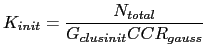
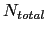
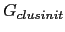
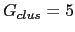
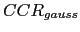

Next: Acoustic Modeling without Time Up: Clusters and Models Complexity Previous: Model Complexity Selection Contents
In order to perform an agglomerative clustering on the data an
initial number of clusters  needs to be defined. This
value needs to be higher than the actual number of speakers to
allow the system to perform some iterations before finding the
optimum number of clusters
needs to be defined. This
value needs to be higher than the actual number of speakers to
allow the system to perform some iterations before finding the
optimum number of clusters  . It also cannot be too big,
as each model needs a minimum cluster occupancy to be trained
properly, and to avoid unnecessary computation.
. It also cannot be too big,
as each model needs a minimum cluster occupancy to be trained
properly, and to avoid unnecessary computation.
In prior work (Anguera, Wooters, Peskin and Aguilo (2005) for the meetings domain and Wooters et al. (2004) for broadcast news data), the number of initial clusters was fixed within each domain. In the meetings domain, it was set to either 10 or 16 initial clusters, and in the broadcast news domain it was set to 40 initial clusters. The selection of these values had to be tuned to be greater than the possible number of speakers in any given recording while maximizing the performance. As pointed out earlier, this leads to suboptimal results when conditions change.
With the following method, the number of initial clusters is defined on a per recording basis by taking into account the total amount of data available for clustering:
|  | (4.10) |
The number of initial clusters is a function of the amount of data available for clustering , the number of Gaussian mixtures to initially assign per cluster  (as in prior work, ) and the Cluster Complexity Ratio  presented in the previous section. This initializes the system using an average complexity of and the amount of data per cluster as defined by . This technique does not try to guess the real number of speakers present in a recording, but rather sets an upper boundary to the number of speakers that is closely coupled with the complexity selection algorithm and which allows a correct modeling of each initial cluster for each particular recording by determining the optimum amount of data it should be trained with.
user 2008-12-08